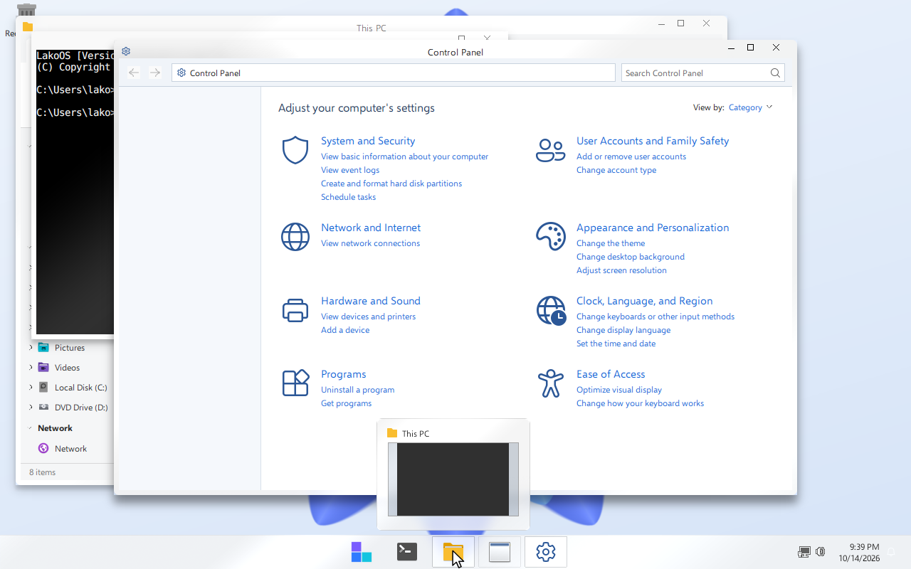
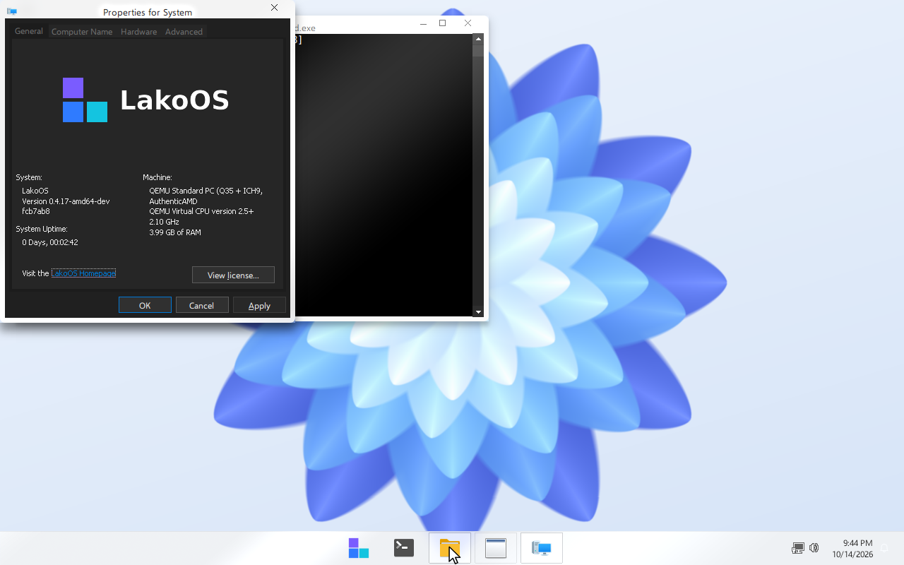

Pinned apps, recommendations and search in one panel. Switch between the centered grid and the list with tiles.

Tabs, command bar, drives with free-space bars, a tree of subfolders.

A light Control Panel and a System page with edition, processor and memory.

taskmgr, cmd, regedit, eventvwr, diskmgmt keep their names.

WoW64 for 32-bit programs on 64-bit systems.
WDDM and DWM composition; Mesa LLVMpipe, Lavapipe and DXVK.
lakoupdate checks, downloads and verifies packages and drivers.